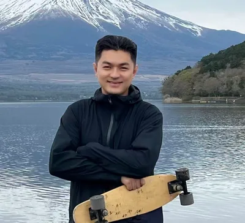

人形机器人与AI投融资专家 · 海鑫汇专家顾问

李果是海鑫汇（Gateway To New）专家顾问、人形机器人与AI投融资专家，专注人形机器人、世界模型与AI投融资趋势，具备AI产业与人才投资洞察能力。
海鑫汇 GTN 专家顾问｜李果；Messay University 金融分析 硕士；中国人民大学 计算机 硕士；北京理工大学 控制科学与工程 硕士；吉林大学农林经济管理学士；清华五道口数字经纪人才DEEP首期学员；得到高研院九期学员；北京华夏青云数据信息科技有限公司CEO；微医集团 医学人工智能政府事务经理；闪动体育联合创始人；和熙人力具身智能&脑机接口猎头顾问；新东方前途美研咨询顾问&就业顾问；和君商学院出海班 导师
"跨界融合，以技术与服务链接产业价值；终身成长，用专业与视野赋能未来生态"
从吉林大学农林经济管理的本科基底，到Messay University 金融分析、中国人民大学计算机、北京理工大学控制科学与工程的三硕士跨界深造，李果始终以"打破学科边界、构建复合能力" 为学习内核—— 这不仅是对"终身成长" 的践行，更铺垫了他跨领域赋能、最终锚定教育咨询的职业路径。
早期职业阶段，他以北京华夏青云数据信息科技有限公司CEO 为起点，整合计算机、控制科学与数据技术，为各行业提供数字化解决方案，首次将"多学科知识" 转化为"产业落地能力"；随后切入前沿领域，在微医集团担任医学人工智能政府事务经理，推动AI 医疗技术与政策适配，让技术真正贴近民生需求；期间联合创办闪动体育，将数字化思维注入体育产业，探索"科技+ 体育" 的创新模式；更以和熙人力具身智能& 脑机接口猎头顾问的角色，链接前沿技术领域核心人才，为产业升级匹配智力资源；而当前作为新东方前途美研咨询顾问& 就业顾问，他将过往在数字科技、AI 医疗、人才孵化领域的积累融入教育服务—— 用金融分析视野帮学生规划学业路径，用数字经济思维拆解海外就业趋势，用跨界产业经验为学生匹配适配发展方向，真正实现"跨界能力反哺教育" 的闭环。
在他看来，每个职业赛道都是能力的沉淀：数据科技教会他"系统思维"，AI 医疗领域深化"合规意识"，体育创业打磨"资源整合"，猎头工作强化"人才洞察"，而最终的教育咨询则成为所有经验的"价值出口"—— 始终围绕"用跨界视野解决需求痛点，用专业积累创造长期价值" 的不变初心。
1、跨界资源赋能，打通多领域出海通路
海鑫汇出海圈汇聚政策制定者、头部创始人、顶尖学者与一线基金的"跨境资源势能"，恰好契合李果多领域业务的出海需求：无论是华夏青云数据的海外数字化解决方案输出、微医集团AI 医疗技术的跨境落地，还是闪动体育的数字化产品出海，亦或是新东方美研咨询所需的海外高校资源链接，都能在平台中找到精准对接的机会。
置身其中，不仅能第一时间捕捉RCEP 下数字经济、医疗健康、教育服务的出海政策风向，还能与海外主权基金、科技巨头、高校联盟精准对接。
2、价值观深度共鸣，共创长期生态
海鑫汇"让中国智慧在全球生根" 的使命，与李果"用中国技术、服务与教育经验赋能全球" 的初心高度同频。他在数据科技领域推动的"数字化方案国产化+ 适配国际化"、在教育领域探索的"海外升学& 就业全链路指导"，本质上都是"中国智慧" 的实践延伸；而平台倡导的"共创、共享、共善" 长期主义生态，更与他"跨界合作才能放大价值" 的信条不谋而合—— 从联合创办企业到链接人才，再到如今赋能学生，他始终相信"利他即利己"。
正因如此，他愿意成为海鑫汇"人才引力场" 的一环：将兼具"数字技术能力+ 教育服务经验+ 出海视野" 的同行者（如跨境教育顾问、数字经济研究者、AI 医疗从业者）引荐入圈，让个体专业优势汇聚成多领域出海的集体势能，让"中国智慧" 的微光汇成星河。
未来李果将携团队围绕"数字赋能、教育链接、产业落地" 三条主线，与全体会员共赴"一带一路" 多领域出海新机遇，构建可持续的跨界赋能生态：
1、多领域出海解决方案支持
依托自身在数据技术、AI医疗、教育咨询的实践经验，联动海鑫汇海外资源，为会员企业提供"需求匹配+ 合规指导+ 资源对接" 全流程服务：
- 医疗领域：联合海外医疗协会，为会员AI 医疗企业提供市场准入咨询，推动技术落地； - 教育领域：链接海外高校与新东方资源，为会员子女/ 企业员工提供"海外升学+ 实习就业" 全链路指导。
2、跨界人才孵化与链接
结合自身"多硕士学历+ 商学院/ 高研院经历+ 猎头背景" 的优势，搭建"出海跨界人才培养体系"：
- 人才对接：整合和熙人力资源，为会员企业推荐具身智能、跨境教育、数字合规等领域高端人才； - 成长陪伴：为青年从业者提供"导师制" 辅导，帮助其构建"技术+ 行业+ 出海" 复合能力，打造多领域出海核心人才梯队。
3、全球产业资源枢纽建设
- 资源整合：整合当地数字科技园区、医疗健康机构、海外高校、体育产业资本，形成动态更新的"跨界资源云图"； - 机会输出：每季度发布《多领域出海机会白皮书》，聚焦数字经济、跨境教育、AI 医疗赛道，解析海外需求（如东南亚数字转型缺口、欧美教育服务合作机遇）； - 对接服务：通过线上路演、线下闭门会，实现会员企业与海外资源精准匹配（如帮AI 医疗会员对接新加坡私立医院合作、帮跨境教育会员链接海外高校联盟），真正做到"让资源找对领域，让能力找到出海场景"。
若您亦相信"跨界赋能，价值共生"，愿以技术、教育或产业资源助力中国多领域出海，欢迎与我们同行！